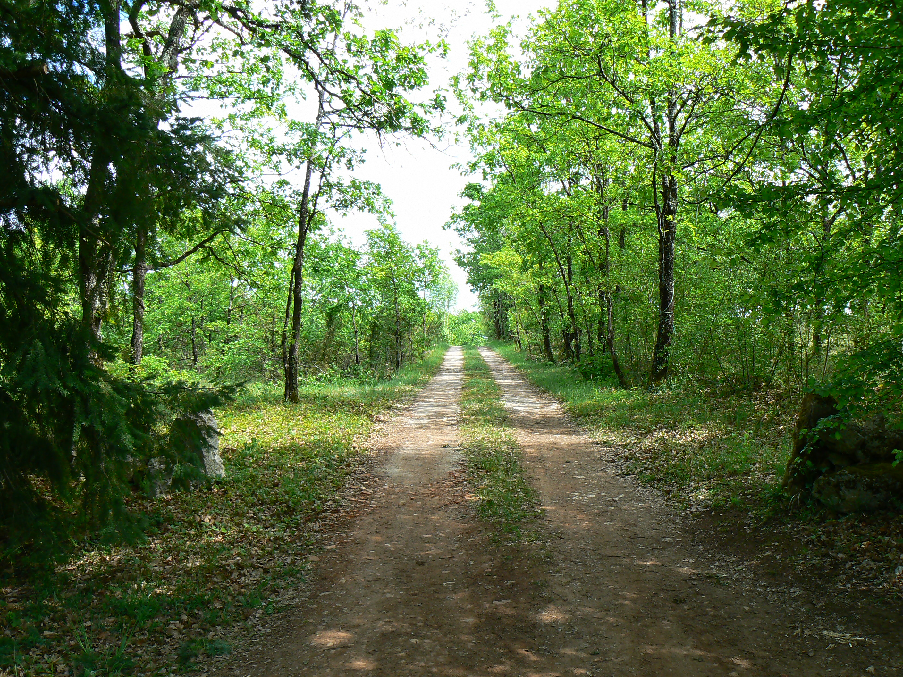

La safranière
Vous trouverez ici les informations liées à notre itinéraire cultural.
La safranière de Fontorbe est implantée sur une parcelle de 1200m2 , son cycle cultural est court et les planches sont cultivées en buttes. Elle permet une excellente productivité de safran et de bulbes.
Chaque safranière doit s’adapter aux avantages et contraintes de son environnement , au sens large du terme. Ici, nous détaillons les motivations et expériences qui ont orienté les options retenues. Elles évolueront au fil de nos apprentissages et ne sauraient, en aucun cas, faire figure de modèle !